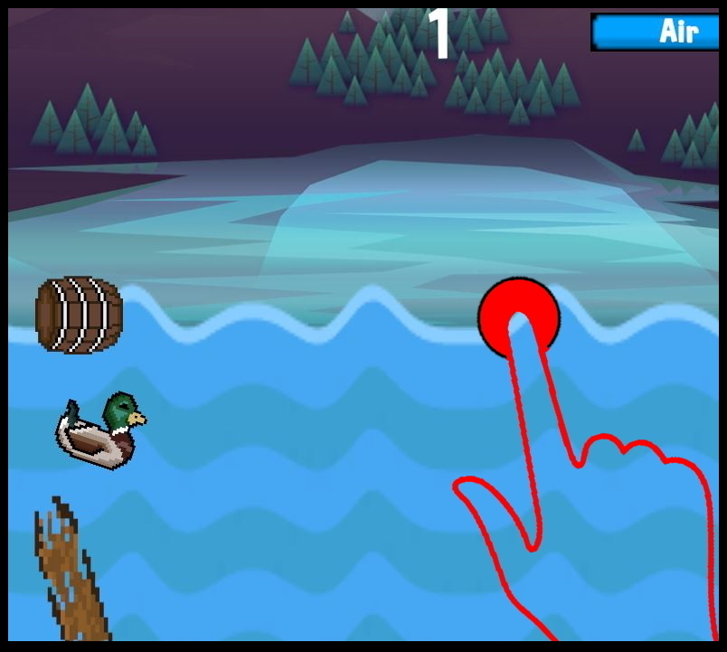
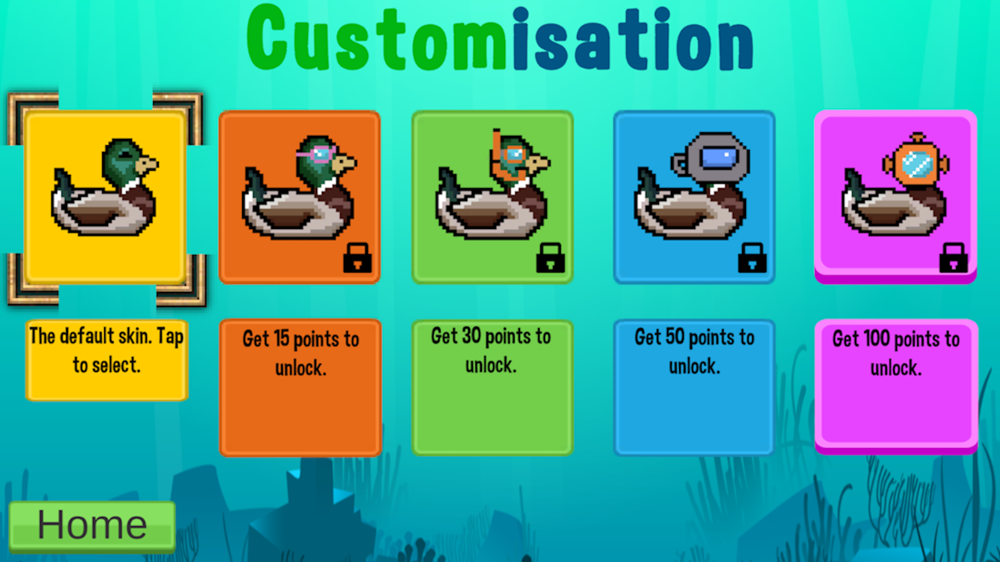

Duck Dive was my second mobile game release. I used what I had learnt from Space Tracer and built upon it to create an arcade side-scroller game with high replayability. I tried to capture the simple but fun nature of popular mobile games around 2010 such as Temple Run and Flappy Bird. The inspiration for the project was watching ducks at my local lake feed off of the bottom of the lake by diving underwater.
The player will tap or tap and hold on the screen to dive underwater. Points are earned by staying underwater and going through the obstacles without touching them. If the player touches an obstacle then they die and have to start again. Players can also fly into the air by swiping upwards when they are on the water's surface. Bread and Peas will appear in the air coming towards the player if they successfully touch the bread or peas then they get bonus points. However there will be some hawks and swans also flying in the air so caution is needed by the player. There is also an oxygen system that the player must consider. When they dive underwater the oxygen meter reduces, as soon as they reach the surface of the water the Oxygen Meter refills. This adds an extra layer of difficulty and is another factor for the player to consider in whether they should fly or dive underwater to avoid obstacles.

I implemented Google Play Games integration so that players could unlock achievements and compete with friends and other players globally by setting high scores on the leaderboard. The biggest challenge was implementing the unlockable skins feature. I used Unity's player prefs and scriptable objects for this feature. When a player had earned enough points to unlock one of the points achievements then during play booleans would change to make the skin selectable in the customisation shop. When the skin is selected it would set the PlayerPrefs to an integer assigned to the skin. When the player loads in, a script checks the PlayerPrefs and then accesses the sprite stored in the scriptable object (named SkinDatabase) associated with the playerpref integer and changes the Duck's sprite.
